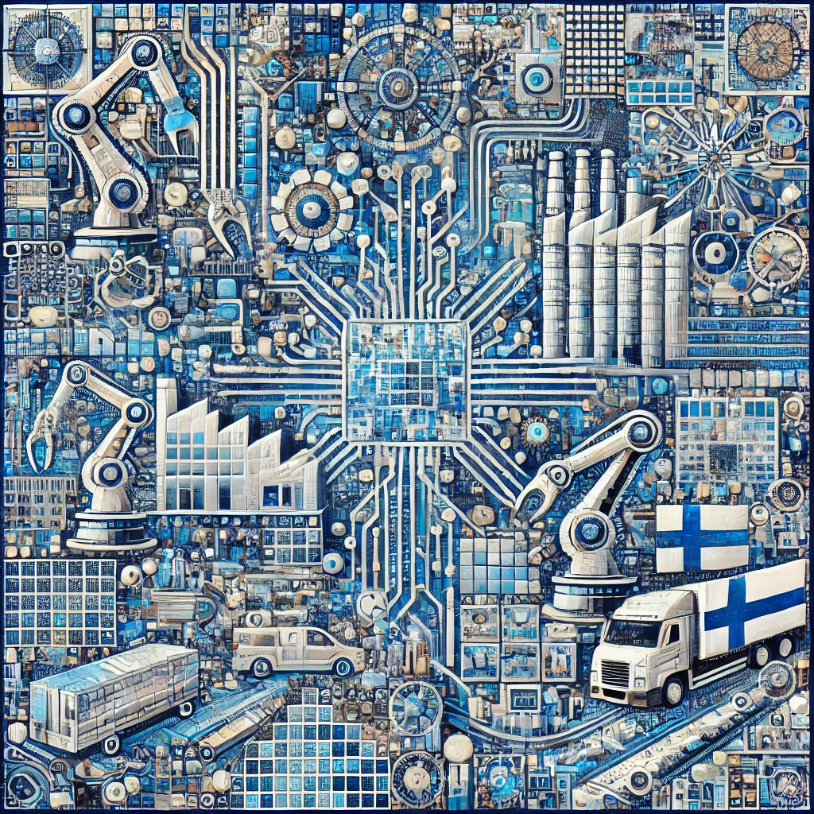

| Главная | Финляндия | Швеция | Норвегия | Дания |
|---|
Название 'Финляндия' происходит от шведского слова 'Finland', что означает 'страна финнов'. Финское название 'Suomi' имеет неясное происхождение.
Происхождение слова Финляндия
Название страны в русском и многих других языках происходит от шведского Finland («земля охотников» — от древнескандинавского fin «охотник», и шведского land — «земля, страна»). В Саге об Инглингах (XIII век), написанной на древнеисландском языке, упоминается топоним Finnland.
Финское название страны — Suomi. Впервые оно упоминается на страницах новгородских летописей в форме Сумь (с начала XII века).
Существует несколько версий происхождения этого названия:
Первые жители современной Финляндии прибыли около 9000 лет назад. Эти первые люди были предками нынешних саамских пастухов Лапландии. На протяжении большей части эпохи викингов (793–1066 гг. н.э.) многие страны боролись за контроль над Финляндией. За это время финны поставляли меха викингам, проходившим через страну на пути в Россию. Когда эпоха викингов закончилась в 11 веке, и русские, и шведы пытались претендовать на Финляндию. Конфликт между Россией и Швецией перерос в религиозное соперничество, в результате которого папа — глава католической церкви — объявил Финляндию шведской территорией в 1120 году. Финляндия оставалась частью Швеции до 1809 года, когда Россия получила контроль над страной. Более ста лет спустя, в 1917 году, Финляндия наконец провозгласила независимость от России после русской революции, когда российские граждане свергли своего лидера и сформировали выборное правительство. С тех пор Финляндия остается независимой страной. Финляндия – парламентская республика. Парламент (называемый Эдускунта) является законодательной ветвью власти; его возглавляет президент, который – вместе с членами парламента – избирается общественностью. Президент назначает премьер-министра, который возглавляет кабинет, который является исполнительной властью. Премьер-министр является главой правительства, а президент – главой вооруженных сил. В 2003 году Финляндия вошла в историю, когда ее президентом и премьер-министром были женщины, и это произошло впервые в Европе. До 2009 года Финляндия была одной из самых эффективных экономик Европы, но в последнее время стареющее население замедлило обмен товарами и деньгами в стране. В настоящее время более 75 процентов рабочей силы работает в сфере услуг, например, в отелях и ресторанах. Ведущим бизнесом страны является производство, особенно в деревообрабатывающей, металлургической и электронной промышленности.
Финляндия известна своими озерами и лесами. Расположена в Северной Европе, граничит с Россией, Швецией и Норвегией.
Природа
Берега Финского и Ботнического заливов Балтийского моря преимущественно шхерного типа (особенно на юге и юго-западе): низменные, сильно расчленённые многочисленными мелкими бухтами, с обилием каменистых островков. В вершине Ботнического залива представлены маршевые берега с обширными илистыми осушками. Отмечаются быстрые изменения береговой линии, обусловленные значительным гляциоизостатич. поднятием суши, макс. скорость которого (0,9 м в 100 лет) зафиксирована на архипелаге Кваркен в Ботническом зал.
Климат
Финляндия находится в умеренном климатическом поясе, и её климат является переходным от морского к континентальному, при этом Балтийское море и Гольфстрим оказывают смягчающее воздействие. По мере продвижения с юго-запада на север и северо-восток континентальность климата увеличивается. Зимы здесь продолжительные и морозные, сопровождаются сильными ветрами и обильными снегопадами, а лето сравнительно тёплое, но короткое. Средняя температура февраля, самого холодного месяца, составляет от -3°C до -6°C на юге, от -8°C до -11°C в центральных районах и до -14°C на севере. В июле средние температуры достигают 17°C на юге, 16–16,5°C в центре и около 13°C на севере. Годовое количество осадков варьируется: на юге и в центре страны выпадает 600–650 мм, на крайнем юго-западе до 750 мм, на побережье Ботнического залива 550–600 мм, а в северных районах оно уменьшается до 450–500 мм. Снежный покров сохраняется в течение 6 месяцев и достигает в среднем 1,5 м в центральной и северной Лапландии, в то время как на юго-западе страны он лежит 3–4 месяца и редко превышает 0,2–0,3 м. В прибрежных районах Финляндии часто наблюдаются туманы, их количество может варьироваться от 35 до 85 дней в году.
Финляндия – высокоразвитая страна с сильным ИТ-сектором и производством. Важнейшие компании: Nokia, Kone, Wärtsilä.

Финны известны дизайном (Маримекко, Ииттала), тяжелой музыкой (Nightwish, HIM) и сауной.
Популярные места: Лапландия, Рованиеми, крепость Суоменлинна, Озеро Сайма.
Лапландия — это регион на севере Европы, охватывающий северные части Норвегии, Швеции, Финляндии и России. Известна потрясающими северными пейзажами, полярным сиянием, оленьими фермами и культурой саамов. В Финляндии Лапландия популярна среди туристов для зимнего отдыха: катание на лыжах, поездки на упряжках с хаски.
Рованиеми — столица финской Лапландии, расположенная за Полярным кругом. Город известен как официальная резиденция Санта-Клауса, где можно посетить Деревню Санта-Клауса. Также здесь находится Арктикум — музей и научный центр, посвященный жизни в Арктике.
Историческая морская крепость, расположенная на островах у побережья Хельсинки. Построена в XVIII веке шведами для защиты от России, позже перешла под российский контроль. Сейчас Суоменлинна включена в список Всемирного наследия ЮНЕСКО и является популярным туристическим местом.
Крупнейшее озеро Финляндии и четвёртое по величине в Европе. Известно живописной природой, множеством островов и уникальной популяцией кольчатых нерп Сайма (редкий вид тюленей). Озеро популярно среди туристов для круизов, рыбалки и каякинга.
| Главная | Финляндия | Швеция | Норвегия | Дания |
|---|